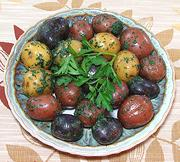

|
Tiny Potatoes with HerbsCalifornia | ||||
| Serves: Effort: Sched: DoAhead: |
6 app ** 25 min Yes |
Did you ever wonder what to do with those little bags of tiny potatoes in various colors. Here's a simple side dish or appetizer using them. It's very simple, but nobody will complain - it's potatoes. | |||
|
1-1/2 1 2 2 1/3 1/4 |
# t T T t t |
Tiny Potatoes Salt Herbs (1) Olive Oil ExtV Salt Pepper |
Make - (25 min)
|